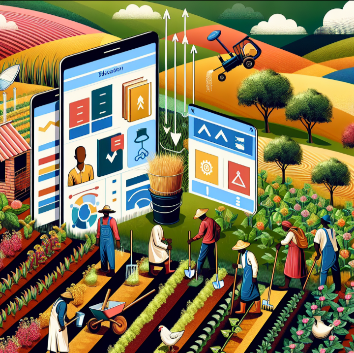
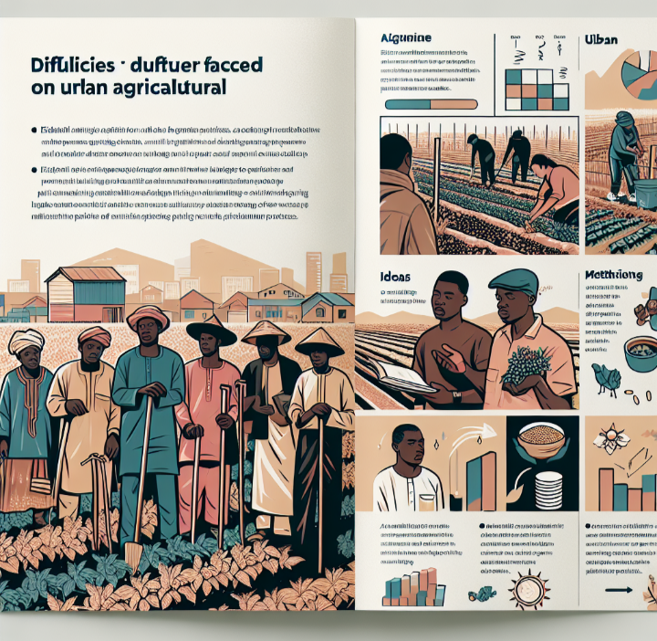
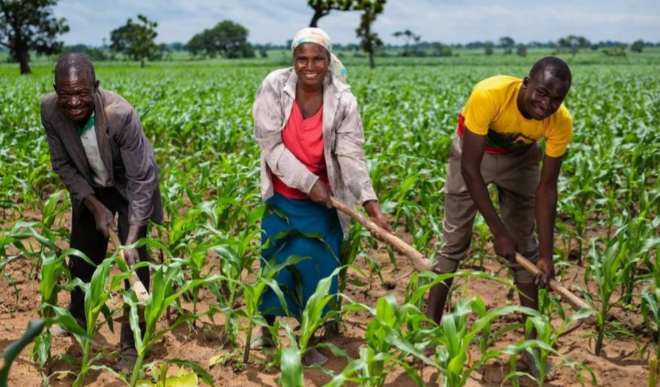
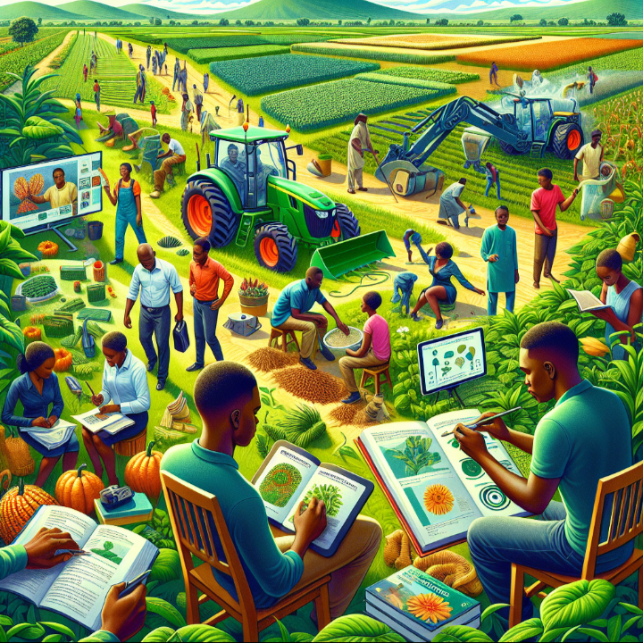
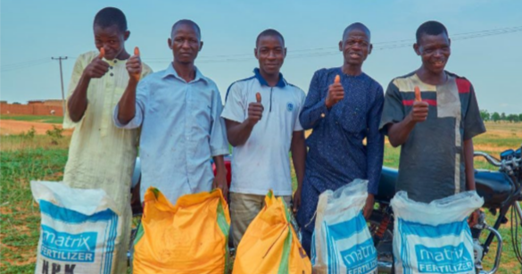

Agritech Solution
Welcome to Agritech Solution Addressing Challenges Promoting Sustainable farming
Introduction to the Agritech Solution
Agritech Solution: It will be very help for farmers in Nigeria by solving the various challenges they face and providing them with tools and resources to improve their farming activities.
Here are some of the Agritech Solutions page that will help Nigerian farmers:

Agricultural Learning Progress Site
It is a platform dedicated, that refers to providing educational resources and support to farmers in Nigeria, as well as being responsible for agricultural affairs.
Problems Faced by Farmers and Their Solutions page
This page solves the challenges of farmers, such as insecurity that has led to the decline in agricultural production, by giving guidance on the cultivation of crops in cities, so that to solve the problem of food shortage in Nigeria.
Methods of Agricultural Development Site
It sheds light on agricultural development strategies, including dry farming strategies, to improve productivity and sustainability in Nigeria's agricultural sector.
Whether Forecast Site
Provides timely weather forecasts and notification alarms to empower farmers with essential information for planning and decision-making, thereby the risks of climate related to agricultural activities.
Development methods for young people in the field of agriculture in Nigeria site
This page highlights Youth Development Trends in Agriculture and Contemporary Agricultural Development Studies provides resources, guidance, and information tailored to youth interested in pursuing a career or education in agriculture. It is covers various modern of agricultural development methods, techniques, and opportunities with the aim of encouraging and providing young people with the necessary knowledge to be successful in the field of agriculture.
Support Farmers Site
Facilitates getting help from agricultural organizations, government programs, and access to agricultural loans, with the aim of empowering farmers with the necessary support to develop agriculture.
Market Supply and Optimization
Agritech solutions can streamline the agricultural supply chain by providing real-time monitoring and tracking of produce to market. This transparency improves quality, reduces food waste, and ensures that quality products reach consumers.
Also,This website always are updating through our technical team site.

My Name is, Haruna Lawali
Thanks to the 3mtt program,
Thanks to we are teachers, Dr Hakeem Ibrahim and Dr Bello Kaura,
Speaking of my position as a student, Health education and agricultural education are very important to be taught in the language that people hear most.
The peace of the nation should have education and sufficient food. Agritech Solution is a Contribution to the Peace of Nigerians people.